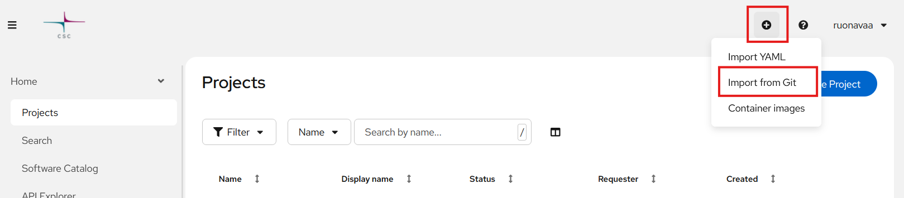
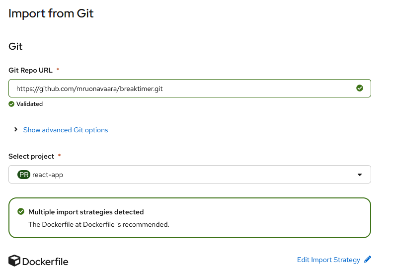
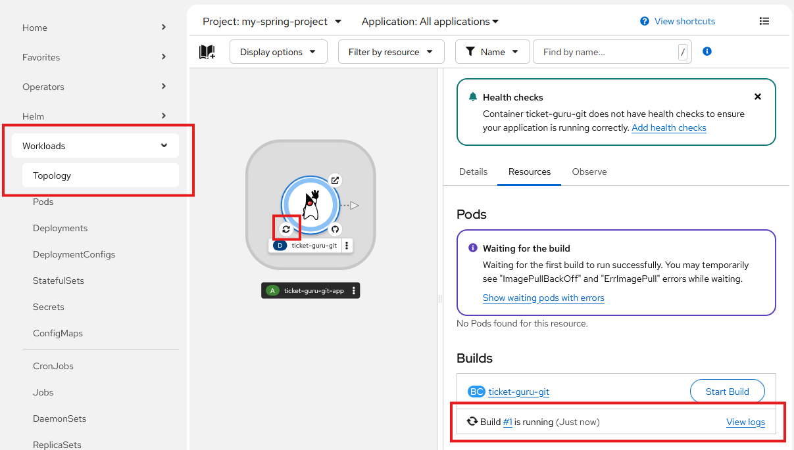
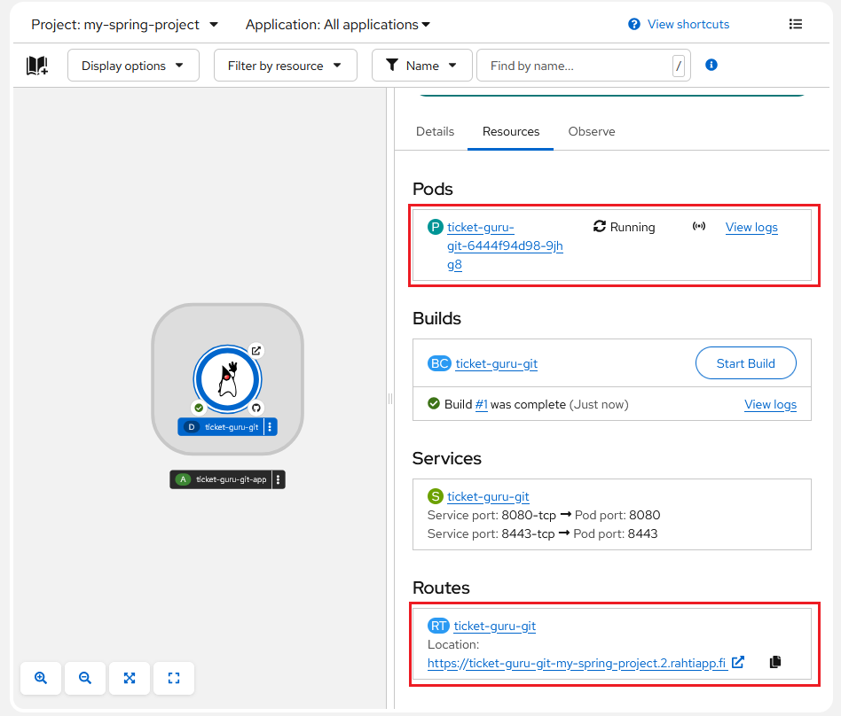

React-sovelluksen julkaiseminen
Sovelluksen valmistelu julkaisua varten
Julkaisu tehdään käyttäen Docker-konttia. Kontin levykuva tekee ensin React-buildin ja käynnistää sitten nginx-web-palvelimen jakamaan sovellusta.
Lisää projektin juureen Dockerfile-niminen tiedosto, jonka sisältö on seuraava:
# Use an official Node runtime as a parent image
FROM node:19-alpine AS build
# Set the working directory to /app
WORKDIR /app
# Copy the package.json and package-lock.json to the container
COPY package*.json ./
# Install dependencies
RUN npm ci
# Copy the rest of the application code to the container
COPY . .
# Build the React app
RUN npm run build
# Use a non-root nginx image to serve the React app
FROM bitnamisecure/nginx:latest
# Copy React build to nginx HTML directory
COPY --from=build /app/dist /usr/share/nginx/html/
# Copy nginx-configuration file
COPY --from=build /app/nginx.conf /etc/nginx/conf.d/default.conf
WORKDIR /usr/share/nginx/html/
EXPOSE 8080
Yllä /app/dist on hakemisto, johon React build tehtiin. Vite-ympäristössä hakemisto on oletusarvoisesti dist, Create React App -ympäristössä build.
Lisää projektin juureen nginx-konfiguraatiotiedosto nginx.conf seuraavalla sisällöllä:
server {
listen 8080;
root /usr/share/nginx/html;
location / {
index index.html;
try_files $uri $uri/ /index.html;
}
}
Dockerfilen toimivuus kannattaa testata paikallisessa Docker-ympäristössä. Asenna Docker, käynnistä Docker Desktop ja anna projektin juuressa komennot:
docker build -t myimage .
docker run -p 80:8080 --name myapp myimage
Sovelluksen luonti web-käyttöliittymässä
Voit nyt julkaista React-sovelluksesi Rahti-palvelussa. Klikkaa oikeasta yläkulmasta pientä + -ikonia ja valitse Import from git.

Import from Git-lomakkeella määritellään, mistä repositoriosta sovellusprojekti haetaan, ja miten build ja julkaisu tehdään.

Seuraavassa käydään läpi lomakkeen kenttien selitykset ja suositellut valinnat. PAkolliset kentät on lihavoitu. Riippuen valinnoistasi kaikkia kenttiä ei välttävättä näytetä lainkaan. Osa kentistä on Show advanced option-valinnan takana.
| Kenttä | Selitys |
|---|---|
| Git Repo URL | Repositorion osoite. Huom! Jos repositorio on yksityinen, osoite pitää antaa SSH-muodossa (esim. git@github.com:username/reponame.git). |
| Git reference | Haara, tag tai commit, josta julkaisu tehdään. Ei tarvita, jos julkaisu tehdään oletushaarasta. |
| Context dir | Sovellusprojektin juurihakemisto, oletusarvoisesti repositorion juurihakemisto /. |
| Source Secret | Salaisuus, joka sisältää repositoriopääsyyn tarvittavan SSH-avaimen. Tarvitaan vain, jos repositorio on yksityinen. Salaisuuden voi myös luoda valinnalla Create new Secret. |
| Select project | Valitse projekti, johon sovellus luodaan. |
Tässä ohjeessa käytämme Dockerfile-julkaisumenetelmää. Jos se ei ole jo suositeltuna, voit valita sen Edit Import Strategy-valinnalla.
Valitesemalla Edit Import Strategy-valinnalla tulee Dockerfile-julkaisuun liittyviä kenttiä:
| Kenttä | Selitys |
|---|---|
| Dockerfile path | Jos valitsit metodiksi Dockerfile, voit määrittää Dockerfile:n sijainnin ja nimen. Oletusarvoisesti nimi on Dockerfile ja sijainti sovelluksen juuressa. |
Kaikkien julkaisumenetelmien yhteisiä valintoja ovat:
| Kenttä | Selitys |
|---|---|
| Application | Sovelluksen nimi. |
| Name | Sovelluksen tunniste, joka liitetään kaikkiin sovellukseen luotaviin resursseihin etuliitteksi. |
| Build Option | Valitse oletus Build Config ja muut oletukset. |
| Resource type | Valitse oletus Deployment ja muut oletukset. |
| Target port | Palveluun luodun reitin portti. Valitse oletus 8080 ja muut oletukset. |
Kun painat valintaa Create, tarvittavat resurssit luodaan ja build käynnistyy. Voit seurata buildin etenemistä web-käyttöliittymässä linkistä View logs tai klikkaamalla build status -symbolia graafisesta esityksestä.

Kun julkaisu on onnistunut, projektiin on ilmaantunut Deployment, jossa on toivottavasti käynnissä oleva kontti (Pod), palvelu (Service) sekä reitti (Route). josta sovelluksesi vastaa. Voit tarkastella sovelluksesi käynnistymistä ja toimintaa podin lokitiedoista (linkki View logs). Kun sovellus on käynnissä, voit klikata reitin URL-osoitetta (osiossa Routes) ja tarkistaa, että sovelluksesi vastaa odotetusti.
Jos jokin meni pielee, tilannetta voi selvitellä luvun Virheenjäljitys ohjeiden avulla.

Kun olet tehnyt muutoksia sovellukseesi, voit käynnistää uuden buildin manuaalisesti klikkaamalla Start Build -painiketta. Build voidaan myös automatisoida tapahtumaan aina, kun GitHub-repositorioon pusketaan uusi versio lähdekoodista, ks. Buildin automatisointi.
Julkaisu komentorivillä
Jotta tässä luvussa käytettäviä oc-komentoja voi antaa, on ensin kirjauduttava Rahti-palveluun luvun Rahti-palveluun kirjautuminen komentorivillä ohjeiden mukaisesti.
Jos repositorio on julkinen, voit luoda projektiin sovelluksen (application) komennolla:
oc new-app <repository-URL>#<branch-name>
<repository-URL>on osoite, josta repositorion voi kloonata<branch-name>on haara, josta julkaistaan.
Jos repositorio on yksityinen, on komentoon lisättävä tieto käytettävästä SSH-avaimesta:
oc new-app <repository-URL>#<branch-name> --source-secret=<github-secret>
<github-secret>on SSH-avaimen sisältävän salaisuuden nimi.
Tuloksena syntyy build config ja build käynnistyy. Voit seurata buildin etenemistä web-käyttöliittymässä.
Kun julkaisu on onnistunut, projektiin on ilmaantunut deployment-konfiguraatio sekä toivottavasti käynnissä oleva palvelu.
Kun palvelu on luotu. tarvitaan vielä reitti:
oc expose service <service-name>
<service-name>on äsken luodun palvelun nimi, oletusarvoisesti sama kuin
Tällä syntyy reittikin, ja palvelu on julkaistu verkkoon HTTP-protokollalla. Jos halutaan https-pääsy, on se konfiguroitava erikseen, ks. luku HTTPS-konfigurointi
Uuden buildin käynnistäminen
Build voidaan automatisoida tapahtumaan aina, kun GitHub-repositorioon pusketaan uusi versio lähdekoodista. Tällöin build käynnistyy automaattisesti, eikä manuaalista käskyä tarvita. Ks. luku Buildin automatisointi.
Muutosten jälkeen uusi julkaisu voidaan käynnistää myös manuaalisesti web-käyttöliittymästä tai komentorivillä oc-komennolla.
oc start-build <build-config-name>
<build-config-name>on oletusarvoisesti sama kuin<deployment-config-name>